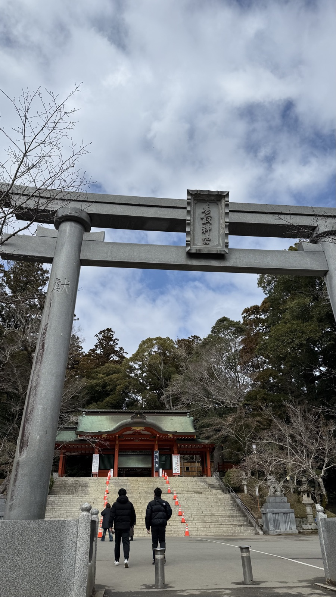
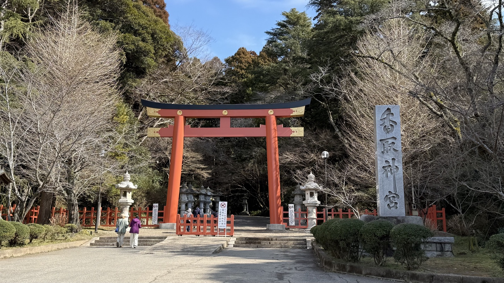
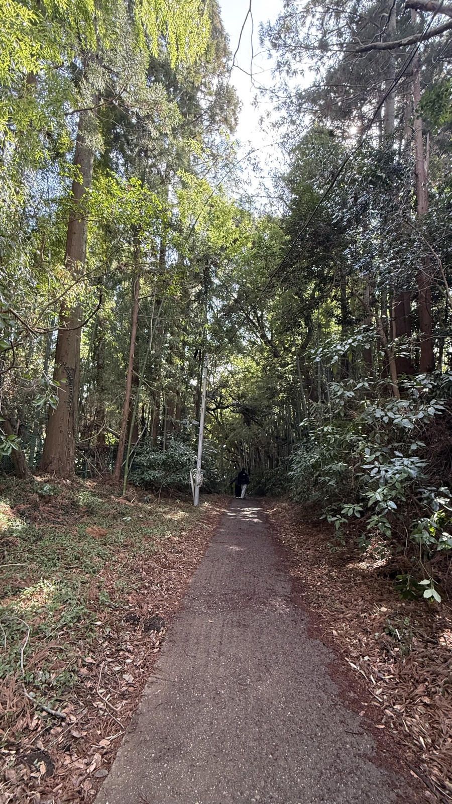
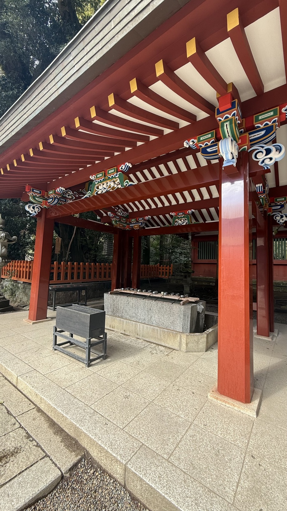
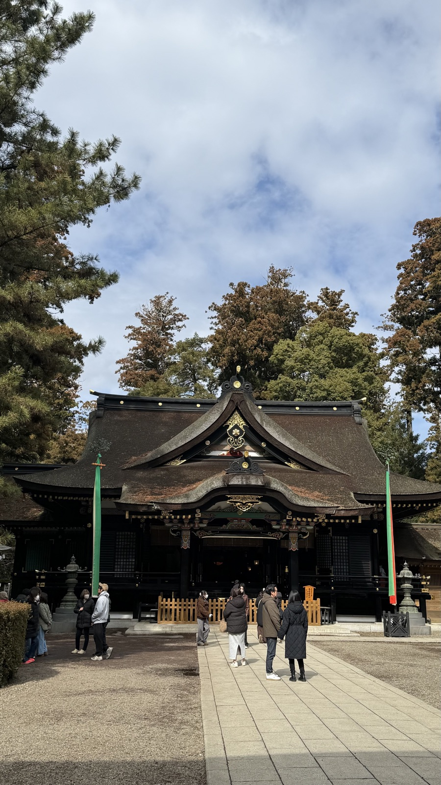
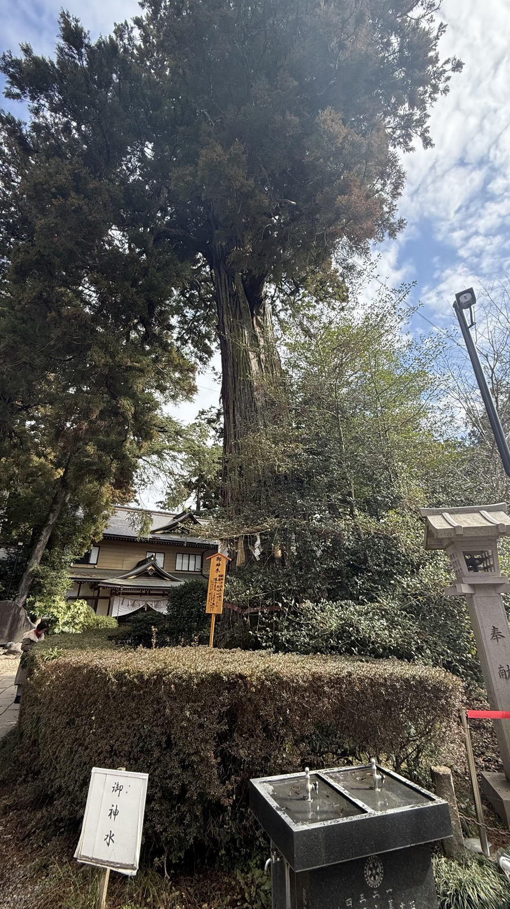
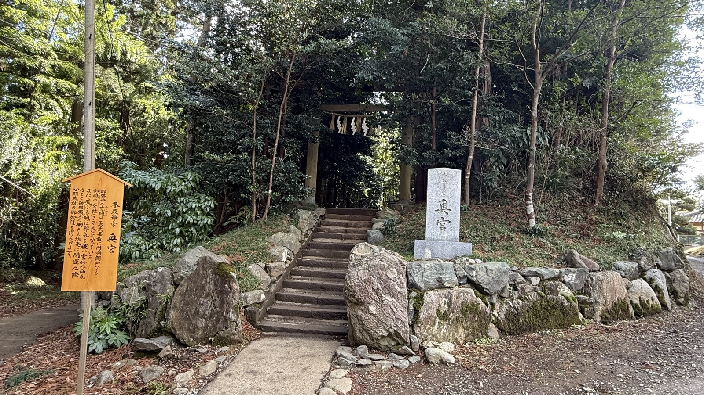
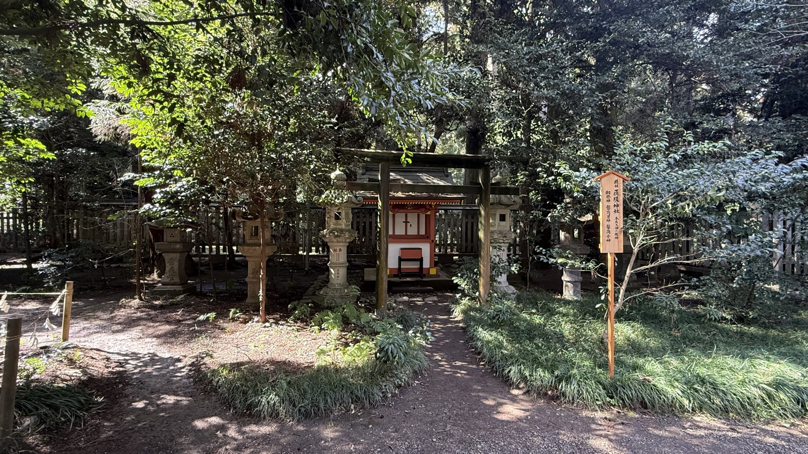
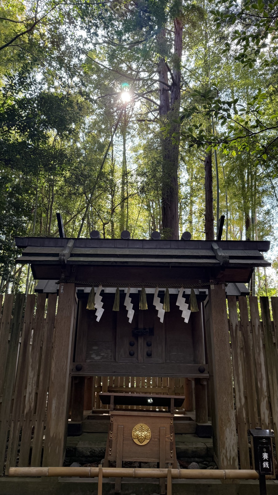
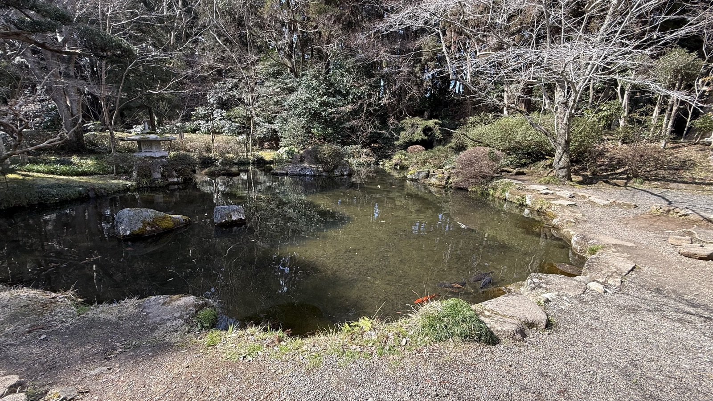

Origins and founding
Ichinomiya of Shimosa Province. It enshrines the god said to have been sent with Kashima's deity in the transfer-of-the-land myth. It is the head shrine of about 400 Katori shrines across Japan.


What to see
The black-lacquered main sanctuary, with a cypress-bark roof and said to date from the Genroku era / the cedar-lined approach / the Kaname-ishi — Kashima's is said to be convex, Katori's concave.





The large sacred cedar and a purification basin fed by sacred spring water.

Stone steps leading to the Okumiya.

The subsidiary Sosa shrine. A small shrine building surrounded by stone lanterns.


Cultural context
Kashima, Katori and Ikisu are known as the Three Shrines of the East. They stand along key points of water transport in the Tone River system. Their gods are often enshrined in martial-arts dojo as warrior deities.